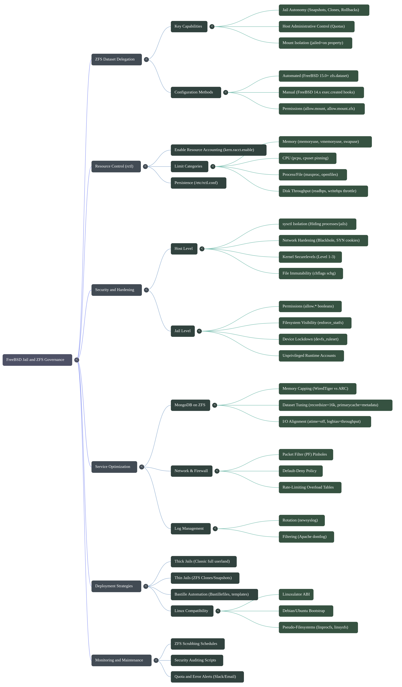

About Article Colors
Color Notation
Color Notation
Color Notation
Internal Link
External Link
Italic, Bold, Under-line & code
I must admit. I fall in love with FreeBSD and nothing can stop me now. You don't need to install extra software. You don't need to install extra software. Should I repeat this 1000 times? Like OpenBSD but without those restrictions that kill your hardware performance, FreeBSD is the love you need. Your best lover!

Being paranoid with Security?
To set up a secure FreeBSD system based on your sources, you should implement a multi-layered "onion peel" defense-in-depth architecture spanning kernel tuning, system file immutability, service binding restrictions, SSH hardening, packet filtering, jail containerization, resource controls, and automated auditing.
1. Kernel Hardening ( /etc/sysctl.conf )
Configure kernel state variables in `/etc/sysctl.conf` to restrict process visibility, harden memory execution, and drop unauthorized network probes
Process and Information Isolation:
# Hides processes owned by other users from non-root accounts.
security.bsd.see_other_uids=0
# Hides processes owned by other groups.
security.bsd.see_other_gids=0
# Hides processes running inside jails from unprivileged host processes.
security.bsd.see_jail_proc=0
# Blocks unprivileged users from reading kernel logs via `dmesg`.
security.bsd.unprivileged_read_msgbuf=0
# Disallows unprivileged processes from debugging or tracing other processes.
security.bsd.unprivileged_proc_debug=0
security.bsd.allow_ptrace=0
Memory, Execution, and Filesystem Protections
# Prevents unprivileged users from creating hard links to files they do not own.
security.bsd.hardlink_check_uid=1
security.bsd.hardlink_check_gid=1
# Randomizes Process ID (PID) allocation.
kern.randompid=1
# Prevents setuid executables from dumping core files that might leak sensitive data.
kern.sugid_coredump=0
# Enforces **Write XOR Execute (**$W\\text{^}X$**)** memory protection.
kern.elf32.allow_wx=0
kern.elf64.allow_wx=0
Network Stack Hardening
# Silently drops TCP and UDP packets sent to closed ports to frustrate port scans.
net.inet.tcp.blackhole=2
net.inet.udp.blackhole=1
# Enables SYN cookies to mitigate SYN flood attacks.
net.inet.tcp.syncookies=1
# Drops ICMP redirects and disables IP source routing.
net.inet.icmp.drop_redirect=1
net.inet.ip.redirect=0
net.inet.ip.sourceroute=0
net.inet.ip.accept_sourceroute=0
To apply these sysctl parameters without rebooting, run: sysctl -f /etc/sysctl.conf
2. Kernel Security Levels (`securelevel`) & System Immutability
Enable Kernel Securelevel: In `/etc/rc.conf`, set:
# Set to 1 (production), 2 (high security), or 3 (appliance)
sysrc kern_securelevel_enable="YES"
sysrc kern_securelevel="1"
Raising `kern.securelevel` to 1 or higher prevents kernel module loading/unloading, enforces file immutability flags, and blocks raw disk writes.
Set File Immutability Flags
# Before enabling `securelevel`, mark critical binaries and configuration files as system immutable (`schg`)
chflags schg /boot/kernel/kernel /sbin/init /etc/rc.conf /etc/pf.conf
# (Note: At securelevel 1+, root cannot modify these files or remove the* *schg* flags without rebooting into single-user mode)
Kernel Modules Pre-allocation
Since module loading is disabled at securelevel 1+, list all required kernel modules in `/etc/rc.conf` under `kld_list="..."` prior to rebooting.
3. Service & Network Port Lockdown
Audit Listening Sockets
Run `sockstat -4 -6 -l` on the host to check active listening sockets.
Restrict Socket Bindings
Reconfigure host services so they do not bind to wildcard IP addresses (`*:port` or `INADDR_ANY`), preventing host services from capturing traffic sent to jail IP addresses.
Disable Unnecessary Services
Set `syslogd_flags="-ss"` to disable `syslogd` network sockets, disable unused services (e.g., `sendmail_enable="NO"`, `rpcbind_enable="NO"`), and turn off internal test daemons.
4. Hardened SSH Access (`/etc/ssh/sshd_config`)
Custom Port
Rebind SSH to a custom high port (e.g., `Port 32145`.
Disable Direct Root Logins
Set `PermitRootLogin no` in `/etc/ssh/sshd_config`.
Restrict administrative escalation to authenticated staff users added to the `wheel` group using `su` or `ksu`.
Enforce SSH Key Authentication
Set `PasswordAuthentication no` to disable password logins in favor of SSH public keys or Kerberos.
Session & Connection Limits
Enforce strict connection grace periods and session limits: `LoginGraceTime 30`, `MaxAuthTries 3`, and `MaxSessions 3`.
Key Restrictions
Restrict public key logins by specifying `from="IP/DOMAIN"` in `authorized_keys` files, and turn off key-forwarding when connecting through untrusted hosts.
5. Firewall Protection via Packet Filter (`/etc/pf.conf`)
Enable PF
Add `pf_enable="YES"` and `pflog_enable="YES"` to `/etc/rc.conf`
Default-Deny Ruleset
Apply a strict default-deny policy at the top of `/etc/pf.conf` (`block return log on $ext_if all` or `block log all`)
Anti-Spoofing
Add `antispoof for $ext_if` to drop incoming packets claiming to originate from internal netblocks.
Automated Brute-Force Rate Limiting
Define persistent block table
Because You are Hyper Paranoid you use Jails
Yes, you wish to install all kind of extra software on jails. Your favorite programs to access the internet. Yes, like that. But you want to use the Classic Jails because they give total isolation if compared to all other methods using software like Bastille and others. You will need extra time consuming, but who cares right? Life is about Time consuming anyway. The super cool details is that you can limit hardware consuming to each jail. You can have a jail that only takes 200MB of RAM and another that can take about 2GB. You can say that your jail, can access or not the internet, that other jails can talk or not with it, that you have 1 or more cpus dedicated to this jail, to mount real partitions on this jail. Is like setting up KVM with QEMU but better, because Jails are already embedded on the kernel. No need to install extra software at this point.